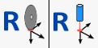

Auf der Seite Taschenfräsen kann eine rechteckige Tasche mit Radien und ebenem Boden ausgeführt werden.
Für diese Bearbeitung ist ein geeigneter Fräser erforderlich, der an der Hauptspindel montiert werden muss.
Als Niveau für den Boden wird die „Arbeitstischhöhe“ verwendet.
Der Zyklus wird in mehreren Durchgängen mit helikalem Eintauchen in der Mitte und einer in den Parametern einstellbaren Durchgangsweite ausgeführt.

Parameter
X | |
Y | |
 | Radius R |
 | Taschentiefe |
 | Z-Schritt |
 | Durchgangsabstand |
 | Tiefenzustellung beim Eintauchen  |
 | Arbeitsgeschwindigkeit |
 | Absenkgeschwindigkeit |
 | Achsen X und Y nullsetzen  Die Position wird erfasst, indem die Fräsermitte auf den angegebenen Punkt positioniert wird. |
Ausführung der Bearbeitung
Die Maße X, Y und R eingeben, die die gewünschte Form der rechteckigen Tasche bestimmen.
Die Korrektheit der Werkzeugdaten, insbesondere des Durchmessers, überprüfen.
Die folgenden zwei Ausführungsarten stehen zur Verfügung.
Modus Taschenfräsen bis zur Arbeitstischhöhe
Für die korrekte Ausführung einer Tasche muss die Maschinenmitte am Ursprungspunkt der Tasche positioniert werden, wie in der Abbildung des vorherigen Kapitels gezeigt. Dadurch wird sichergestellt, dass die gesamte Bearbeitung korrekt relativ zum vorgesehenen Bereich ausgeführt wird.
Anschließend werden die charakteristischen Maße der auszuführenden Taschenform eingestellt.
Vor dem Start der Bearbeitung müssen die Daten des ausgewählten Werkzeugs unbedingt auf Richtigkeit geprüft werden, insbesondere der Durchmesser, da dieser die Genauigkeit und Qualität der Tasche unmittelbar beeinflusst.
Die „Arbeitstischhöhe“ muss bezogen auf das Bodenniveau der Tasche erfasst werden. Zur korrekten Bestimmung wird auf die Oberkante des Materials positioniert und die Z-Position auf null gesetzt. Von dort wird um die gewünschte Taschentiefe nach unten verfahren. Anschließend kann die Arbeitstischhöhe über die entsprechende Schaltfläche erfasst werden. Bei Werkzeugen vom Typ Fräser wird empfohlen, diesen Vorgang mit der Achse A auf 90_ auszuführen, um Ungenauigkeiten aufgrund der tatsächlichen Werkzeuglänge zu vermeiden.
Nach Festlegung der Arbeitstischhöhe werden die Achsen X und Y nullgesetzt. Dazu wird die entsprechende Reset-Taste gedrückt und die Fräsermitte mithilfe des Bezugssymbols exakt auf den in der Abbildung angegebenen Punkt positioniert. Bei Maschinen mit Zeigelaser kann der Nullpunkt in X und Y direkt anhand des Laserbezugs erfasst werden.
Die Taschentiefe hängt unmittelbar von der als Arbeitstischhöhe eingestellten Ebene und von der Position der Z-Achse beim Start des Zyklus über die Schaltfläche „Zyklus starten“ ab. Die Bearbeitung erfolgt mit einem helikalen Eintauchen in der Mitte bis zur im Parameter „Z-Schritt“ angegebenen Tiefe. Anschließend wird der Bereich mit einer konzentrischen Bewegung und dem in den Bearbeitungsparametern eingestellten Abstand ausgeräumt.
Die zum Erreichen der Startposition erforderlichen Maschinenbewegungen erfolgen auf der sogenannten „Freifahrhöhe“, die in den Werkzeugparametern festgelegt werden kann. Dadurch wird sichergestellt, dass das Werkzeug während der Positionierbewegungen nicht mit Hindernissen kollidiert.
Modus Positionierung über dem Werkstück und Nullsetzen des Ursprungswerts
In diesem Modus wird der Parameter „Taschentiefe“ eingestellt und anschließend verwendet.